OTOBO PDF Sign & Store¶
Beschreibung¶
PDF Sign & Store bringt die Unterschrift dorthin, wo sie gebraucht wird: an das Gerät, vor Ort, auf dem Bildschirm.
Ein Dokument aus dem Documents-Addon — ein Übergabeprotokoll, eine Empfangsbestätigung, ein Wartungsbericht — wird als PDF angezeigt. Der Empfänger unterschreibt direkt darauf: mit dem Finger, mit einem Stift oder mit der Maus. Das unterschriebene PDF wird sofort am Config Item abgelegt, also an genau dem Gerät, um das es geht. Kein Ausdruck, kein Scan, kein Zettel, der auf dem Weg zur Ablage verloren geht.
Damit schließt sich eine Lücke, die viele Häuser bis heute mit Papier überbrücken: Die CMDB weiß, welches Notebook an wen ausgegeben wurde — aber der Nachweis, dass der Mitarbeiter es tatsächlich entgegengenommen hat, liegt in einem Ordner im Nebenraum. Nach der Unterschrift am Bildschirm liegt er am Gerät.
Unterschreiben, wo man steht — die Maske ist in OTOBO eingebettet und für das Tablet gebaut. Kein zweites Fenster, kein Rücksprung, keine App.
Drei Wege hinein — aus der Dokumentenübersicht, aus der Seitenleiste des Geräts oder aus dem Menü der Config-Item-Ansicht.
Am Gerät abgelegt — das unterschriebene PDF wird ein Anhang des Config Items und ist dort zu finden, wo jeder danach sucht.
Nachweisbar wiederauffindbar — zwei Übersichten beantworten „Was wurde an diesem Gerät unterschrieben?“ und „Was hat dieser Kunde unterschrieben?“.
Revisionsgenau — jede Unterschrift merkt sich, welche Fassung des Dokuments unterschrieben wurde, wann und von wem.
Vorschau und Download — jedes unterschriebene PDF lässt sich direkt im Browser ansehen oder herunterladen, beides mit Rechteprüfung.
Bemerkung
PDF Sign & Store erzeugt einfache elektronische Signaturen. Was das rechtlich bedeutet und wofür das Paket damit taugt, steht unter Rechtlicher Rahmen. Diesen Abschnitt sollten Sie vor dem Kundengespräch gelesen haben.
Einsatzszenarien¶
Geräteübergabe an Mitarbeiter — Notebook, Diensthandy oder Tablet werden ausgegeben, der Mitarbeiter unterschreibt das Übergabeprotokoll direkt auf dem Gerät des Technikers. Der Nachweis hängt danach am Config Item des ausgegebenen Geräts.
Rücknahme und Geräteweitergabe — bei Abteilungswechsel oder Austritt wird die Rückgabe genauso bestätigt wie die Ausgabe. Die Historie am Gerät zeigt beide Vorgänge nacheinander.
Abnahme nach Wartung oder Installation — der Techniker lässt die erbrachte Leistung vor Ort quittieren, statt später eine Unterschrift nachzuhalten.
Einweisung und Unterweisung — Sicherheitsunterweisungen oder Einweisungen in ein Gerät werden mit der Unterschrift des Eingewiesenen dokumentiert.
Leih- und Vorführgeräte — Ausgabe und Rückgabe von Leihgeräten an Kunden, mit einer Übersicht pro Kundenbenutzer, was dieser Kunde alles unterschrieben hat.
Audit-Vorbereitung — auf die Frage „Zeigen Sie mir den Empfangsnachweis für dieses Gerät“ führt ein Klick in der Config-Item-Ansicht zum unterschriebenen PDF.
Systemvoraussetzungen¶
Framework¶
OTOBO 11.0.x
Pakete¶
ITSMConfigurationManagement (11.0.x) — die OTOBO-CMDB. PDF Sign & Store legt jede Unterschrift an einem Config Item ab und braucht diese Struktur.
Documents (11.0.x) — liefert das PDF. Ohne das Documents-Addon gibt es kein Dokument zum Unterschreiben.
Software von Drittanbietern¶
Keine eigene. PDF Sign & Store nutzt den WeasyPrint-Dienst, den das Documents-Addon ohnehin für die PDF-Erzeugung betreibt. Läuft Documents, ist auch diese Voraussetzung erfüllt.
Überblick¶
Grundlagen
Admin-Handbuch
Anwender-Handbuch
Referenz
Rechtlicher Rahmen¶
PDF Sign & Store erzeugt einfache elektronische Signaturen: eine gezeichnete Unterschrift, die als Bild in das PDF eingebettet wird. Es findet keine Kryptografie statt, es wird kein Zertifikat verwendet, und es entsteht keine qualifizierte elektronische Signatur (QES) im Sinne der eIDAS-Verordnung (Verordnung (EU) Nr. 910/2014).
In der Signier-Maske ist dieser Hinweis über das Info-Symbol jederzeit erreichbar. Der Wortlaut ist unverändert derselbe wie in der i-doit-Fassung des Addons:
Warnung
Die mit diesem Tool erstellten Unterschriften sind lediglich einfache elektronische Signaturen und erfüllen nicht die rechtlichen Anforderungen für qualifizierte Signaturen.
PDF Sign & Store unterstützt keine qualifizierten elektronischen Signaturen (QES) im Sinne der eIDAS-Verordnung (Verordnung (EU) Nr. 910/2014). Die Nutzer sind dafür verantwortlich, die jeweilige rechtliche Gültigkeit und Verbindlichkeit der erstellten Signaturen in ihrem spezifischen Anwendungsfall und in ihrer Jurisdiktion zu überprüfen. Weitere Informationen zu den rechtlichen Wirkungen elektronischer Signaturen finden Sie in Artikel 25 der eIDAS-Verordnung.
Der Anbieter dieses Tools übernimmt keine Haftung für rechtliche Konsequenzen, die aus der Verwendung einfacher elektronischer Signaturen resultieren. Für Dokumente, die eine qualifizierte elektronische Signatur erfordern, sollten spezialisierte Lösungen verwendet werden, die diesen Anforderungen entsprechen.
Was das praktisch heißt: Für die typischen internen Nachweise — Geräteübergabe, Empfangsbestätigung, Abnahme, Unterweisung — ist die einfache elektronische Signatur das übliche und angemessene Mittel; sie ist nach Artikel 25 eIDAS nicht deshalb unwirksam, weil sie nicht qualifiziert ist. Für Dokumente mit gesetzlicher Schriftformerfordernis ist sie es nicht. Diese Grenze gehört ins Kundengespräch, nicht in die Fußnote.
Wo das unterschriebene PDF landet¶
Das unterschriebene PDF wird an zwei Stellen vermerkt, und beide haben einen eigenen Zweck:
Als Anhang am Config Item. Das ist der Ort, an dem ein OTOBO-Anwender eine Datei zu einem Gerät sucht, und es entspricht dem Verhalten der i-doit-Fassung. Das PDF ist damit über die normale Anhangsliste des Config Items erreichbar.
Als Eintrag in einem eigenen Verzeichnis. Das ist keine zweite Kopie der Datei, sondern der Nachweis darüber: welches Dokument, in welcher Revision, an welchem Gerät, von wem und wann unterschrieben, und zu welchem Kundenbenutzer es gehört.
Der zweite Teil ist der Grund, warum die Übersichten überhaupt möglich sind. Ein Anhang für sich trägt keinen Vermerk, woher er stammt, und keinen Kundenbezug — die Frage „Was hat dieser Kunde unterschrieben?“ ließe sich sonst nur beantworten, indem man jedes Config Item des Kunden durchgeht und am Dateinamen rät.
Wird das ursprüngliche Dokument später gelöscht, bleibt der Eintrag bestehen: Die Unterschrift hat stattgefunden, und der Nachweis muss das bezeugen können.
Installation¶
PDF Sign & Store wird als OPM-Paket über die Paketverwaltung installiert.
Melden Sie sich als Administrator an und öffnen Sie Admin → Paketverwaltung.
Laden Sie die Datei
PDFSignAndStore-11.0.0.opmüber Paket installieren hoch.Bestätigen Sie die Installation.
Alternativ auf der Konsole:
/opt/otobo/bin/otobo.Console.pl Admin::Package::Install /pfad/zu/PDFSignAndStore-11.0.0.opm
Bei der Installation wird das Verzeichnis der unterschriebenen Dokumente als Datenbanktabelle angelegt. Weitere Schritte sind nicht nötig — die Einstiegspunkte sind sofort aktiv.
Bemerkung
Die beiden vorausgesetzten Pakete müssen vorher installiert sein:
Paketverwaltung — wie Pakete installiert werden.
Das Documents-Addon muss eingerichtet und sein PDF-Dienst erreichbar sein.
Die CMDB (ITSMConfigurationManagement) muss mit den Klassen bestückt sein, an denen unterschrieben werden soll.
Konfiguration¶
PDF Sign & Store läuft nach der Installation ohne weitere Einstellungen. Die folgenden Einstellungen passen es an, sie sind in der Systemkonfiguration unter der Gruppe Core → PDFSignAndStore und in den Frontend-Gruppen zu finden.
Was Sie üblicherweise anfassen¶
Beide unter Core → PDFSignAndStore.
PDFSignAndStore::Filename::TemplateStandard:
%date%-%ConfigItemName%-%DocumentName%.pdfVorgeschlagener Name für das unterschriebene PDF. Der Anwender kann ihn vor dem Speichern noch ändern. Verfügbare Makros siehe Makros für den Dateinamen.
PDFSignAndStore::CustomerUser::DynamicFieldsStandard:
Contact-UserDynamische Felder des Config Items, die der Reihe nach geprüft werden, um den Kundenbenutzer zu bestimmen. Das erste Feld mit einem Wert gewinnt.
Einstiege und Übersichten¶
Alle ab Werk aktiv. Abschalten lohnt nur, wenn ein Kunde einen der Wege ausdrücklich nicht möchte.
Frontend::Module###AgentDocumentSignStandard: aktiv, ohne Gruppe
Die Signier-Maske selbst. Über
Grouplässt sich das Unterschreiben auf bestimmte Gruppen einschränken, siehe Berechtigungen.Frontend::Output::FilterElementPost###100-PDFSignAndStore-SignButtonStandard: aktiv
Die Schaltfläche zum Signieren in der Dokumentenübersicht. Abschalten entfernt diesen Einstieg.
Frontend::Output::FilterElementPost###110-PDFSignAndStore-SignedDocumentsStandard: aktiv
Das Widget „Unterschreiben“ in der Seitenleiste der Config-Item-Ansicht.
ITSMConfigItem::Frontend::MenuModule###800-DocumentSignStandard: aktiv
Der Menüeintrag „Signieren“ in der Werkzeugleiste der Config-Item-Ansicht.
AgentCustomerUserInformationCenter::Backend###0500-CUIC-SignedDocumentsStandard: aktiv,
ContentLarge, 25 EinträgeDas Widget im Kundenbenutzer-Informationszentrum.
Blockentscheidet über Hauptbereich (ContentLarge) oder Seitenleiste (ContentSmall),Limitüber die Zahl der Zeilen,Groupschränkt den Zugriff ein.
{kind=link}
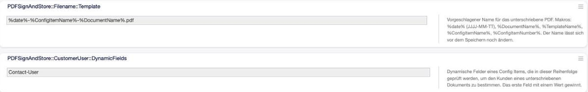
Abb. 1 Die beiden Einstellungen des Pakets in der Systemkonfiguration unter Core → PDFSignAndStore.¶
Admin-Handbuch¶
Vorlage mit Unterschriftsfeld vorbereiten¶
PDF Sign & Store bringt keine eigenen Vorlagen mit — es unterschreibt, was das Documents-Addon erzeugt. Damit ein Protokoll unterschreibbar ist, braucht die Vorlage zwei Dinge:
Platz für die Unterschrift. Eine Unterschriftslinie und eine Datumslinie, die auf der Seite auch dann noch sichtbar sind, wenn der Anwender das PDF am Tablet betrachtet. Bewährt hat sich, beides gemeinsam an das Ende desselben Kapitels zu setzen, damit sie nicht auf getrennte Seiten rutschen.
Ein verknüpftes Config Item. Ein Dokument ohne Config Item lässt sich nicht unterschreiben — die Ablage hätte kein Ziel. Documents erzwingt die Verknüpfung ohnehin.
Tipp
Setzen Sie Ankreuzfelder als gezeichneten Rahmen, nicht als ☐-Zeichen. Ein Glyph hängt an der Schrift, die der PDF-Dienst gerade wählt, und fällt weg, wenn diese Schrift ihn nicht führt. Ein Rahmen wird immer dargestellt.
Nur kompilierte Dokumente sind unterschreibbar. Ein Dokument muss einmal kompiliert worden sein, damit es ein PDF gibt. Solange das nicht geschehen ist, ist die Schaltfläche ausgegraut und der Menüeintrag am Gerät erscheint gar nicht. Es wird nichts automatisch kompiliert — das bleibt eine bewusste Handlung im Documents-Addon.
Dateinamen der unterschriebenen PDFs steuern¶
Der Name, unter dem ein unterschriebenes PDF am Config Item abgelegt wird, kommt aus der Einstellung PDFSignAndStore::Filename::Template. Der Anwender sieht diesen Namen im Speichern-Dialog vorbelegt und kann ihn dort noch ändern.
Standard ist %date%-%ConfigItemName%-%DocumentName%.pdf, was für ein Übergabeprotokoll zu einem iPhone etwa ergibt:
2026-08-11-IPhone_17-Übergabeprotokoll_IPhone_17.pdf
Existiert der Name bereits am Config Item, wird eine Zählung angehängt (…-2.pdf). Zwei Unterschriften am selben Tag überschreiben einander also nicht.
Die verfügbaren Makros stehen unter Makros für den Dateinamen.
Kundenzuordnung einrichten¶
Damit die Übersicht im Kundenbenutzer-Informationszentrum gefüllt wird, muss aus dem Config Item hervorgehen, zu welchem Kundenbenutzer es gehört. PDF Sign & Store liest das aus einem dynamischen Feld des Config Items.
Standard ist das ITSM-Standardfeld Contact-User (Typ CustomerUser). Führt Ihre Klasse ein anderes Feld, tragen Sie es in PDFSignAndStore::CustomerUser::DynamicFields ein. Die Liste wird der Reihe nach geprüft, das erste Feld mit einem Wert gewinnt.
Wichtig
Der Kunde wird im Moment des Unterschreibens ermittelt und mit dem Nachweis gespeichert — nicht erst beim Anzeigen. Das ist Absicht: Wird das Gerät später einem anderen Mitarbeiter zugewiesen, bleibt der Nachweis bei dem, der tatsächlich unterschrieben hat.
Findet sich kein Kundenbenutzer, wird trotzdem gespeichert. Die Unterschrift taucht dann in der Übersicht am Gerät auf, aber in keiner Kundenübersicht.
Berechtigungen¶
PDF Sign & Store bringt keine eigene Gruppe mit. Es gilt: Wer ein Dokument sehen darf, darf es auch unterschreiben.
Soll das Unterschreiben auf einen Kreis eingeschränkt werden, tragen Sie die Gruppe in der Frontend-Registrierung Frontend::Module###AgentDocumentSign unter Group ein.
Für das Ansehen und Herunterladen eines bereits unterschriebenen PDFs gilt unabhängig davon die Leseberechtigung am Config Item: Beide Wege prüfen sie, und die Übersicht im Kundenzentrum überspringt stillschweigend die Zeilen, deren Config Item der Agent nicht sehen darf.
Anwender-Handbuch¶
Die drei Wege zum Unterschreiben¶
1. Aus der Dokumentenübersicht. Jedes kompilierte Dokument trägt eine Schaltfläche zum Signieren. Das ist der Weg, wenn Sie ohnehin schon beim Dokument sind.
{kind=link}
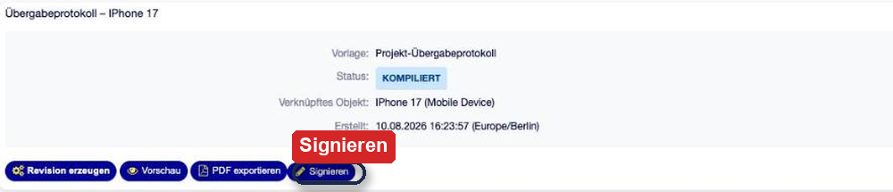
Abb. 2 Erster Einstieg: die Schaltfläche Signieren am kompilierten Dokument, neben Vorschau und PDF-Export.¶
2. Aus der Seitenleiste des Geräts. In der Config-Item-Ansicht liegt das Widget Unterschreiben mit der Schaltfläche Dokument signieren. Das ist der Weg, wenn Sie vom Gerät kommen — der übliche Fall bei einer Übergabe.
{kind=link}
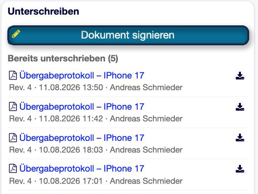
Abb. 3 Zweiter Einstieg: das Widget Unterschreiben in der Seitenleiste des Geräts — oben der Knopf, darunter, was bereits unterschrieben wurde.¶
3. Aus dem Menü der Config-Item-Ansicht. In der Werkzeugleiste neben Bearbeiten und Löschen steht Signieren.
{kind=link}
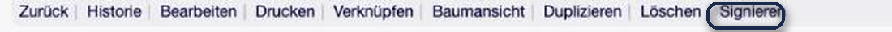
Abb. 4 Dritter Einstieg: der Eintrag Signieren in der Werkzeugleiste der Config-Item-Ansicht.¶
Alle drei Wege führen in dieselbe Maske. Was danach passiert, hängt davon ab, wie viele unterschreibbare Dokumente es an diesem Gerät gibt:
Kompilierte Dokumente |
Verhalten |
|---|---|
keins |
Der Menüeintrag und die Schaltfläche erscheinen gar nicht erst. Ein „Signieren“, das an jedem zweiten Gerät ins Leere läuft, erzieht nur dazu, das Menü zu ignorieren. |
genau eines |
Es geht direkt in die Signier-Maske, ohne Zwischenklick. |
mehrere |
Eine Auswahlseite fragt, welches Dokument gemeint ist. |
{kind=link}
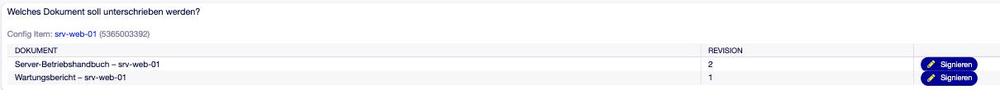
Abb. 5 Hat ein Gerät mehrere kompilierte Dokumente, fragt eine Auswahlseite, welches gemeint ist.¶
Ein Dokument unterschreiben¶
Die Signier-Maske zeigt das Dokument als PDF. Sie ist in OTOBO eingebettet — es öffnet sich kein zweites Fenster und kein Popup, damit sie auch am Tablet bedienbar bleibt.
{kind=link}
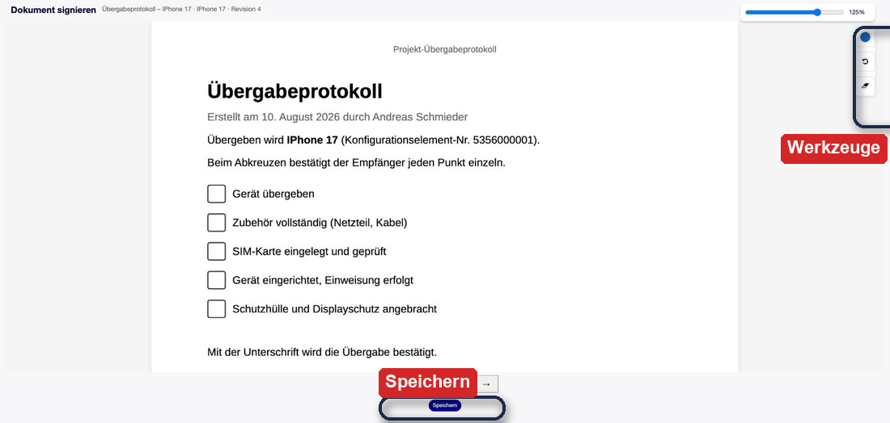
Abb. 6 Die Signier-Maske: das Dokument als PDF, die Werkzeuge am rechten Rand, Blättern und Speichern unten.¶
Blättern Sie mit den Pfeilen zu der Seite, auf der unterschrieben werden soll. Die Seitenanzeige zeigt Seite x von y.
Zeichnen Sie die Unterschrift direkt auf das PDF — mit dem Finger, mit einem Stift oder mit Maus beziehungsweise Trackpad. Beide Bedienarten sind gleichwertig, es gibt keinen Sonderweg für eine von beiden.
Prüfen Sie das Ergebnis. Missglückt der Strich, hilft Letzte Änderung rückgängig machen; ist die ganze Seite verzeichnet, Seite leeren.
Speichern.
{kind=link}
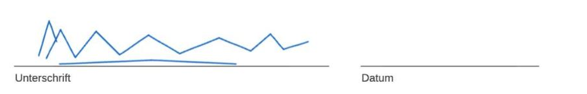
Abb. 7 Unterschrieben wird direkt auf dem Dokument — mit Finger, Stift, Maus oder Trackpad.¶
Werkzeugleiste der Signier-Maske¶
Schaltfläche |
Wirkung |
|---|---|
Seite leeren |
Entfernt alles, was auf der aktuellen Seite gezeichnet wurde. Andere Seiten bleiben unberührt. |
Letzte Änderung rückgängig machen |
Nimmt den zuletzt gezeichneten Strich zurück. |
Stiftfarbe wechseln |
Wechselt die Farbe der Unterschrift. |
Zoom umschalten |
Schaltet zwischen 75 %, 100 % und 125 %. Hilfreich, um eine Unterschriftslinie am Tablet genau zu treffen. |
← / → |
Blättert eine Seite zurück beziehungsweise vor. |
Info-Symbol |
Zeigt den rechtlichen Hinweis, siehe Rechtlicher Rahmen. |
Unterschriebenes PDF speichern |
Öffnet den Speichern-Dialog. |
{kind=link}
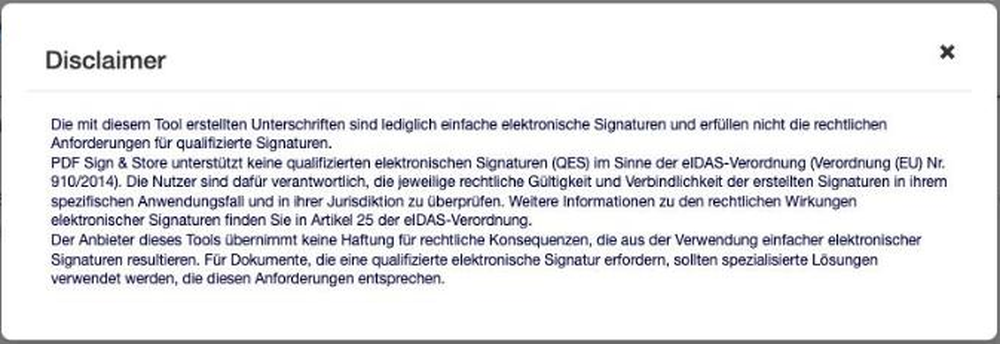
Abb. 8 Der rechtliche Hinweis, erreichbar über das Info-Symbol. Wortgleich aus der i-doit-Fassung übernommen.¶
Speichern¶
Beim Speichern schlägt OTOBO einen Dateinamen vor, der aus Datum, Gerät und Dokumentname gebildet ist. Sie können ihn übernehmen oder überschreiben.
{kind=link}
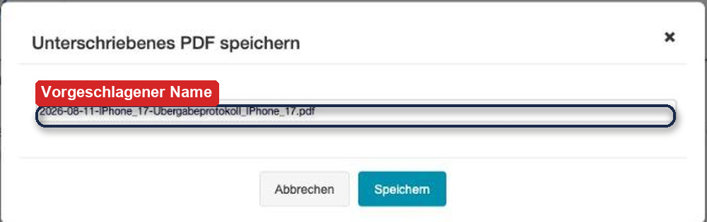
Abb. 9 Der Dateiname ist aus der Vorlage vorbelegt und lässt sich vor dem Speichern noch ändern.¶
Nach dem Speichern liegt das PDF als Anhang am Config Item. Die Bestätigung nennt den verwendeten Dateinamen und bietet zwei Wege weiter: Zurück zum Dokument oder Zum gespeicherten Dokument.
{kind=link}
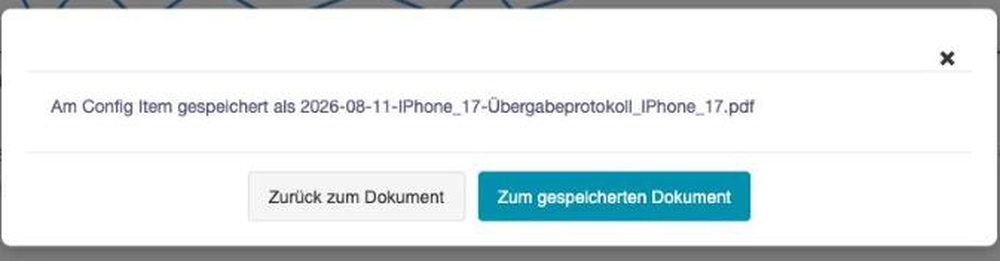
Abb. 10 Nach dem Speichern nennt die Bestätigung den verwendeten Dateinamen und bietet zwei Wege weiter.¶
Bemerkung
Das ursprüngliche Dokument bleibt unverändert. Das unterschriebene PDF tritt als eigener Beleg daneben, es ersetzt die Vorlage nicht und ändert den Status des Dokuments nicht.
Unterschriebene Dokumente wiederfinden¶
Am Gerät. In der Config-Item-Ansicht listet das Widget Unterschreiben unter Bereits unterschrieben alles auf, was an diesem Gerät unterschrieben wurde — mit Revision, Zeitpunkt und Unterzeichner. Genau diese drei Angaben unterscheiden zwei Unterschriften am selben Dokument voneinander.
{kind=link}
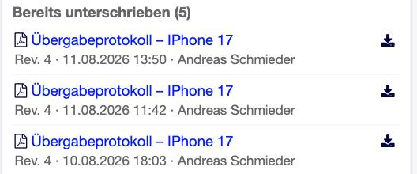
Abb. 11 Was am Gerät unterschrieben wurde — mit Revision, Zeitpunkt und Unterzeichner. Genau diese drei Angaben unterscheiden zwei Unterschriften am selben Dokument.¶
Beim Kunden. Im Kundenbenutzer-Informationszentrum zeigt die Übersicht Signierte Dokumente, was dieser Kundenbenutzer unterschrieben hat — über alle Geräte hinweg.
{kind=link}
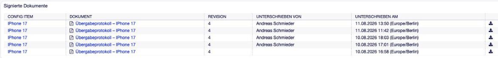
Abb. 12 Im Kundenbenutzer-Informationszentrum läuft zusammen, was dieser Kunde unterschrieben hat — über alle Geräte hinweg.¶
In der Anhangsliste. Weil das PDF ein gewöhnlicher Anhang des Config Items ist, erscheint es zusätzlich dort, wo alle Dateien des Geräts liegen.
Aus beiden Übersichten führen zwei Wege zum PDF:
Klick auf den Dokumentnamen öffnet die Vorschau im PDF-Betrachter des Browsers.
Klick auf das Download-Symbol lädt die Datei herunter.
Beide prüfen, ob Sie das zugehörige Config Item überhaupt sehen dürfen.
Referenz¶
Makros für den Dateinamen¶
Diese Platzhalter stehen in PDFSignAndStore::Filename::Template zur Verfügung:
Makro |
Ersetzt durch |
|---|---|
|
Datum der Unterschrift im Format JJJJ-MM-TT |
|
Name des Dokuments |
|
Name der Documents-Vorlage, aus der das Dokument entstanden ist |
|
Bezeichnung des Config Items, also des Geräts |
|
Nummer des Config Items |
Zeichen, die in Dateinamen nicht zulässig sind, werden ersetzt; Leerzeichen werden zu Unterstrichen.
Meldungen und was dahintersteckt¶
Meldung |
Ursache und Abhilfe |
|---|---|
Erst kompilieren — nur ein kompiliertes Dokument lässt sich signieren. |
Das Dokument hat noch kein PDF. Im Documents-Addon kompilieren, danach erscheint die Schaltfläche aktiv. |
Dieses Dokument ist mit keinem Config Item verknüpft und kann nicht signiert werden. |
Ohne Config Item gibt es kein Ziel für die Ablage. Verknüpfung im Dokument nachtragen. |
Zu diesem Config Item gibt es kein kompiliertes Dokument, das sich unterschreiben ließe. |
Am Gerät hängt kein fertiges Dokument. Erst eines anlegen und kompilieren. |
Fehler beim Laden des PDFs |
Der PDF-Dienst des Documents-Addons hat nicht geantwortet. Prüfen, ob der WeasyPrint-Dienst läuft. |
Das unterschriebene PDF ist nicht mehr gespeichert. |
Der Nachweis existiert, die Datei am Config Item wurde aber gelöscht. Der Eintrag bleibt bewusst bestehen — die Unterschrift hat stattgefunden. |
Keine Berechtigung |
Sie dürfen das Config Item nicht lesen, zu dem dieses PDF gehört. |